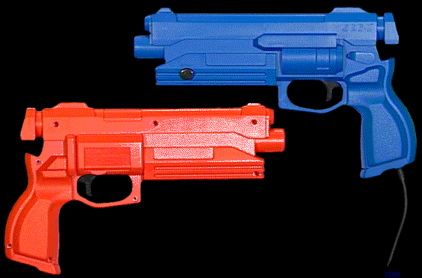

★INDEX
▲
|STN-38
|STN-39
|STN-40
|STN-41
|STN-42
|STN-43
|STN-44
▼
★INDEX
▲
|STN-38
|STN-39
|STN-40
|STN-41
|STN-42
|STN-43
|STN-44
▼
発行番号： | STN-41 | ||||||
|---|---|---|---|---|---|---|---|
発 行 日： | 96/02/16 | ||||||
メディア： | ●共 通 | ○CD-ROM | ○カートリッジ | ○その他 | |||
関 連： | ○プログラム | ●ハード | ○マニュアル | ○ツール | ○ゲーム | ○バグ | ○その他 |
情報区別： | ●新 規 | ○変 更 | ○追 加 | ||||
重 要 度： | ●厳 守 | ○推 奨 | ○参 考 | ○その他 | |||
添付資料： | ●無 | ○有 | |||||
件名補足： | |||||||
| ＰＤＲn n=端子番号 | bit７ | bit６ | bit５ | bit４ | bit３ | bit２ | bit１ | bit０ |
|---|---|---|---|---|---|---|---|---|
| ※ | ラッチ | スタート ボタン | トリガ | ※ | ※ | ※ | ※ |
TV画面中央に十字型のターゲット(以下ターゲット)を表示する。
プレイ位置から、ターゲットのセンターに向けて銃口を構えてトリガを引く。
照準がずれているか無調整の場合、ターゲットの中心からずれた位置に着弾点が表示される。
スタートボタンを押すと、以前の補正値がクリアされる。
銃口をターゲットのセンターに向けて銃口を構えてトリガを引く。この時のHCNT,VCNTの値とターゲットセンター座標との差分を、補正値とする。
調整終了のメッセージを表示する。
 |
BOOT ROMのマルチプレイヤー画面は操作はできません。 |
| 仕向地 | 本体色 | トリガ/スタートボタン | 名称 |
|---|---|---|---|
| 日本・東南アジア | 黒 | 黒 | バーチャガン |
| アメリカ・カナダ | オレンジ | 黒 | STUNNER |
| ヨーロッパ | 青 | 黒 | VIRTUA GUN |
＜STUNNER／VIRTUA GUNカラーサンプル＞

以上
★INDEX
▲
|STN-38
|STN-39
|STN-40
|STN-41
|STN-42
|STN-43
|STN-44
▼